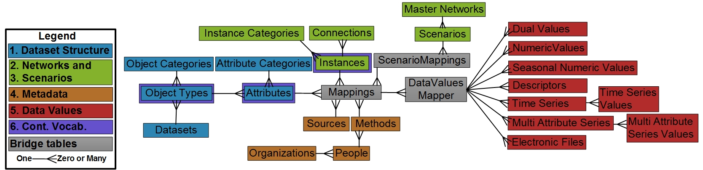
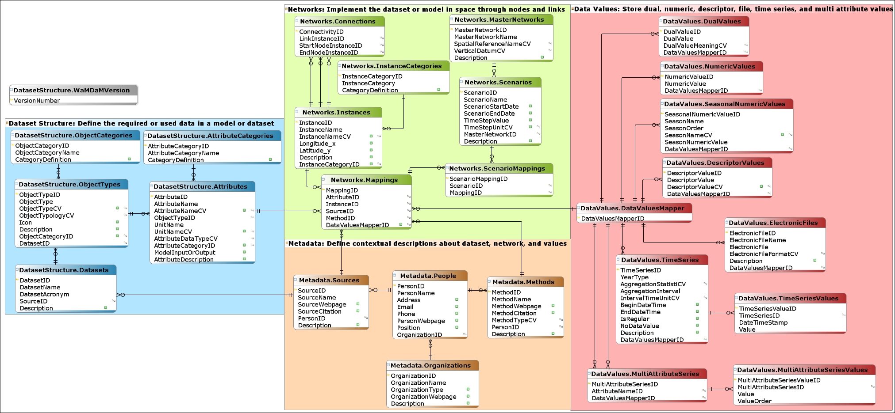

Logical Data Model¶
We implemented the information model into a logical data model by defining a table for each entity, column for each attribute, and specifying the cardinality between data entities, mainly as one-to-many or many-to-many as discussed next for data entities in each feature.
Why the Relational Model?:
-
It supports conditional data queries (Feature #7)
-
It is platform independent and implement as open-source on different operating systems and different relational database systems (Feature #8)
-
It supports a standardized and stable Structured Query Language (SQL)
-
Follows common use in the water resources community (Harou et al., 2010; Horsburgh et al., 2016; Horsburgh et al., 2008; Knox et al., 2014).

Schema interactive diagram¶
WaMDaM schema or entity relationship diagram is available at this interactive site. Check out the interactive schema Schema
Schema XML file¶
WaMDaM schema was designed using DbWrench. Check out the XML file
Dataset Structure¶
We use one-to-many relationships between Datasets, Object Types, and Attributes to support extensible data structures (Feature #1). For example, a WEAP model (i.e., dataset) has 11 Object Types (e.g., Reservoir); each Object Type has many Attributes (e.g., Storage Capacity, Net Evaporation). Each Attribute can only have one of the seven supported Data Types as a controlled vocabulary in addition to one Unit that can be related with an optional controlled unit. We also use one-to-many relationships between Object Category and Attribute Category with Object Types and Attributes, respectively. Users can add Categories to group one or many Objects or Attributes (Figure 1).
Networks¶
To support nodes, links, networks and scenarios in a study area, we first use the Instances table to represent the common properties between nodes and links. Then we manage the unique start and end nodes for each link instance into the Connection table where the direction of flow is implied through start and end nodes on the same link. Representing both nodes and links into the Instance table enables users to use the same query to access data values for either nodes or links. The normalized Instance table approach also allows representing other Object Type typologies besides nodes and links, like a network. A “network” Object Type can contain the global attributes that apply to all the nodes and links in a Master Network (Feature #6). This normalized design that works for multiple typologies and allows a more generalized access to data values improves prior approaches that require many different queries to access node or links data (Abdallah and Rosenberg, 2014; Knox et al., 2014; Yates et al., 2005).
The Object Type is connected to its Instance through a dummy Attribute for each Object Type called ObjectInstances, which requires a software business rule to create it when loading data. A software businesses rule also enforces that a Node or Link Instance can only belong to a parent Object Type with a typology as “node”, “link”, or “network”. Another software business rule insures that each link in the Connections table has a start and end node. This normalized approach avoids a circular reference problem when the Object Types table is directly connected to both the Instances and Attributes tables and then both of them are connected to the Data Values. A circular reference in the database is problematic to the database integrity as may allow two non-unique transaction paths to insert or delete data values like the Object Type to Instances to Data Values, or from Object Type to Attributes to Data Values (Connolly and Begg, 2010).
Second, to relate Instances with their Object Types, Attributes, and metadata, we introduce a Mappings bridge table (Figure 3). An Instance also inherit its Attributes and Object Typology from its parent Object Type. For example, a Reservoir Object Type can have many attributes like evaporation and owner name that associate with many Instances. Many Reservoir Instances can share data identical values like the same evaporation time series or same owner with no duplication. For a consistent representation in space, especially geo-referenced queries and visualizations, a Master Network, which contains all its Instances, may have a spatial reference and elevation datum, where they can be defined through optional controlled vocabularies.
Scenarios¶
A Scenario relates a combination of one or many Instances, their Attributes, metadata, and Data Values that are already linked in the Mappings table within the same Master Network using ScenarioMappings bridge table (Feature #2 and #3). The ScenarioMappings table efficiently reuses the Mappings table combinations the across many Scenarios. For example, the same time series Hyrum Reservoir inflow can belong to the “current” and “future” scenarios, while the “current” scenario can have many other reservoirs, attributes, and data values. WaMDaM Wizard used the ScenarioMappings table to query and compare how the combinations of Instances, their Attributes, and Data Values change between two scenarios within the same network.
Metadata¶
The Mappings table relates each node or link Instance with an Attribute and with its Data Values and with a Source and Method (Feature #4). Each Source and Method can have citations and are created by a Person and can that belongs to an Organization. An Attribute can have one Data Type (e.g., time series) that applies to all its parent Object Type Instances (Feature #5). For Example, an inflow Attribute to a reservoir Object Type can have time series Data Type that applies to Hyrum and Cutler reservoir instances. A Data Value also can be shared across Instances through the bridge table DataValuesMapper which contributes to parsimony and storage efficiency. Here we refer to a Data Value being a time series or multi-variable-array (Figure 3). Users can store data values once and reuse them across Scenarios and Instances without duplication through the both the ScenarioMappings and DataValuesMapper bridge tables. Additional Data Types can be added in tables next to existing Types and connected to the DataValuesMapper without affecting any of the current model relations.
Data Values¶
We organized time series and multi-attribute series Data Types into two tables each to allow practical, efficient, and flexible use as discussed next for each Type (Figure 1 –red entites). In each Type, the first table separates specific metadata from data values in the second table which follows the architecture of the Network Common Data Form (NetCDF) (OGC, 2011) and ODM2 (Gan et al., In Preperation; Horsburgh et al., 2016).
The Time Series table (Figure 1) captures key global metadata for the entire time series and can have one or many values and time stamps in the TimeSeriesValues table. The Time Series table stores i) Begin and End Date/Time fields which represent the extent of a time series, ii) YearType to specify whether it is a “water year” or “calendar year” as both of them are used in water management datasets but not supported in ODM, iii) Aggregation Statistic which is a vocabulary for describing the calculated statistic over an Interval associated with recorded observations (e.g., average, cumulative)., and vi) an Aggregation Interval which indicates the time period of the aggregation statistic (e.g., 1) within an Aggregation Interval Unit (e.g., day, month). The second table records data values and their time stamp. WaMDaM is not intended to replace the specialized time series database systems like CUAHSI but rather to consume and integrate data from them with other data types.
The MultiAttributeSeries table stores multiple attributes (i.e., column names) and their corresponding metadata of source, method, and unit and can have one or many data values for each column in the MultiAttributeSeriesValues table. Each value has a sequential order value to preserve the order and pairing of data values across many attributes within the same array. Data values of the MultiAttributeSeries are flexible to have numeric or text values, which allows storing a wide range of related descriptive and numeric values for many cases. Each attribute or column has its metadata and data values and can be accessed by itself or with the other columns. Future work based on use cases may identify the tradeoff of this flexibility on maintaining the integrity of stored values.
Controlled Vocabulary¶
Controlled vocabularies can apply to zero or many Object Types, Attributes, and Instances Feature #6 (Figure 3). We also introduced eleven other vocabularies a mentioned earlier like Aggregation Statistic for time series, and Spatial Reference of a Network. Each controlled vocabularies table includes a name, definition, and category (Horsburgh et al., 2016). You can view the full list of Controlled Vocabulary tables at http://schema.wamdam.org/diagrams/03_CVs.html. The full WaMDaM logical data model schema comprises 41 interrelated tables and can be viewed at http://schema.wamdam.org/diagrams/01_WaMDaM.html (Figure A, Appendix A). The Extensible Markup Language (XML) schema file is available at https://github.com/WamdamProject/WaMDaM_Information_Model.
 Figure A1: WaMDaM logical model tables grouped into the features of Dataset Structure (#1), Networks (#2) and Scenarios (#3), Metadata (#4), and Data Values (#5). The diagram uses the crow’s foot notation for relationship cardinality and participation. An interactive html copy is available at http://schema.wamdam.org/diagrams/01_WaMDaM.html. . Controlled vocabularies tables ((Feature #6) are not shown here for simplicity and can be viewed at http://schema.wamdam.org/diagrams/03_CVs.html
In general, a WaMDaM data value requires fourteen elements of metadata that include Dataset, Network, and Scenario, and Instance names (Table 1). Correctly representing the many-to-many relationships among the entities within the first six design features while attempting to achieve parsimony within a relatively as easy querying as possible and more efficient storage consumed a large portion of the iterative WaMDaM designs (Connolly and Begg, 2010).
Table A2: Fourteen common required metadata elements for data values in WaMDaM. Other data types like time series, and multi-column attributes have additional specific metadata.